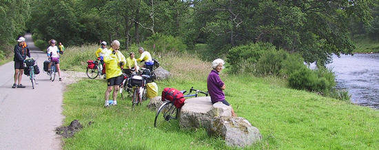

Lots of pics of this day of the tour are here.previous day next dayThe day started out quite cool, raining very lightly I put my jacket on to stay both warm and dry. Our destination for today was Grantown-on-Spey, which was about 14 miles west of Tomintoul, but we got there via big loop to the north, going up along the east bank of the River Avon (a tributary of the Spey) then back along the west bank of the River Spey.
We stopped for tea after only 13 miles, at a hotel which provided a warm, dry respite from the weather. I think we a bit less posh than their usual clientele, but we were welcomed and plied with tea, coffee, and cakes. Before we left I put my long tights, as my legs were quite cold.
We then rode on and, only about 10 miles later, had lunch at Archiestown. Most of us bought food from the local shop an ate it on the green. Here I got had my first encounter with the dreaded Scottish midge. They weren't much of a bother, as all of me was covered except for my face, and they didn't seem to be making much of an effort to bite me. The hotel here was remarkable for having lots of comics on the walls, as well as some old photographs. Also, the ladies loos had seats that were clear plastic with embedded fly fishing flies!
After eating the picnic lunch, several of our crew went into the hotel for tea an coffee. Simon and I didn't feel like hot beverages, so we headed off down the road.
The rest of the ride was very simple, as one B-road took us all the way to Grantown. I have begun to really appreciate Scottish B-roads, as they seem to have nice scenery, are well paved, the hills aren't too steep, and there are very few cars.
Simon saw a nice house along the way, so he stopped to take a picture. As we stood there chatting, a fellow with a gardening tool stepped out from behind the hedge to talk with us. He said the house used to belong to some lady of nobility (a duchess or something) but now is rented out as a fishing lodge, a very expensive one at that!
 resting by the Spey As we talked with him we saw others of our party come along, so we said farewell and joined them. The road gradually dropped down until it was level with the Spey. The sun had finally come out, so we stood admiring the river for a bit, removing excess clothing.
Soon after we headed out I found that I was quite hungry. When I'm hungry while cycling I know the best thing to do is eat right away. So I reached into my bar bag got out a couple slices of malt loaf, and chewed on it a bit at a time. With some food inside me I rapidly found I had more energy, so the last few miles went by quickly.